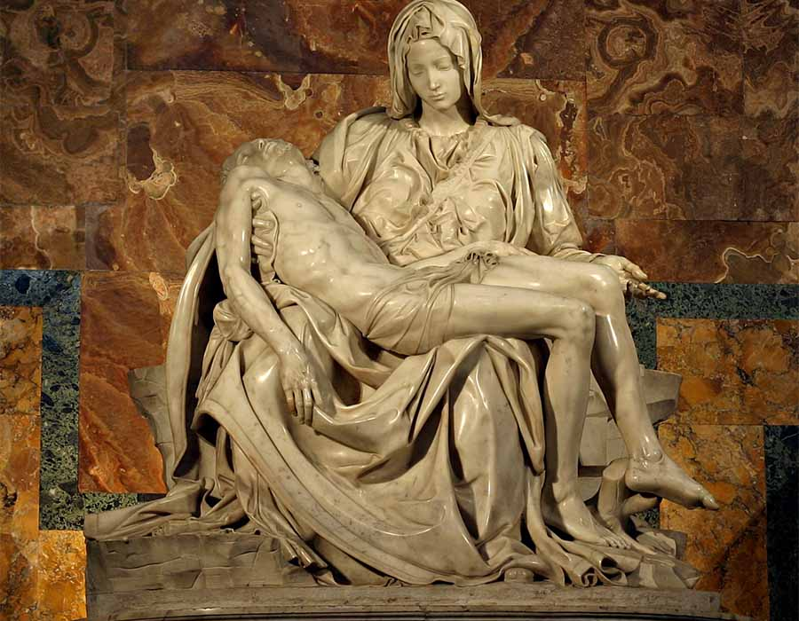
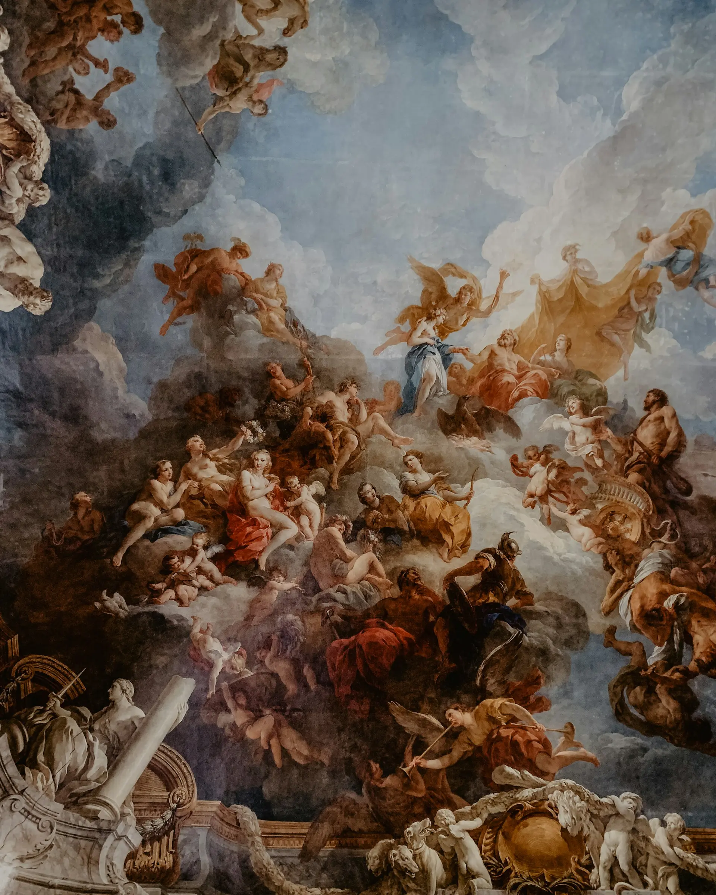

Pietá.
1499 Michelangelo, escultura em Mármore, exibe Maria com Jesus morto em seus braços. Basilica di San Pietro, Vaticano, Itália.
Obras de arte de períodos diferentes da história.

1499 Michelangelo, escultura em Mármore, exibe Maria com Jesus morto em seus braços. Basilica di San Pietro, Vaticano, Itália.

1674 Gian Lorenzo Bernini, monumento funerário do artista barroco itali ano Gian Lorenzo Bernini[1] instal ado na "Capela Altieri",na ig reja de San Francesco a Ripa.

1530 Agnolo Bronzino, uma pintura a óleo sobre madeira do século XVI atribuída ao artista florentino Agnolo Bronzino.

1736 François Lemoyne, Salão de Hércules no Palácio de Versalhes, na França.